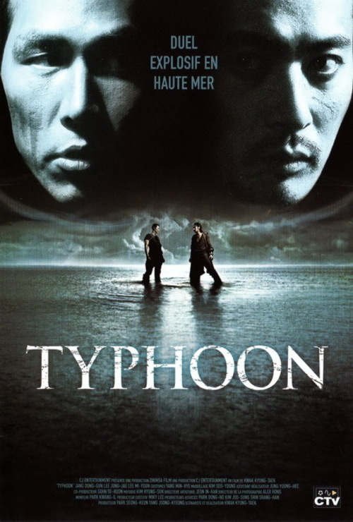

| The Chaser |
Joong-ho, ancien flic devenu proxénète, reprend du service lorsqu'il se rend compte que ses filles disparaissent les unes après les autres. Très vite, il réalise qu'elles avaient toutes rencontré le même client, identifié par les derniers chiffres de son numéro de portable. Joong-ho se lance alors dans une chasse à l'homme, persuadé qu'il peut encore sauver Mi-jin, la dernière victime du tueur.
|

|
| Typhoon |
Un navire de guerre américain transportant des armes nucléaires est attaqué par des pirates nord-coréens, dont le chef voue, depuis 20 ans, une haine contre la Corée du Sud. Les pirates s'emparent des armes nucléaires et menacent de les faire exploser au-dessus de la Corée du Sud. Le gouvernement coréen décide alors d'envoyer un de ses meilleurs agents pour combattre les terroristes. Une traque sans merci commence...
|

|
| Surviving Evil |
Une équipe de tournage arrive sur une île recluse des Philippines pour y filmer un documentaire sur une tribu qui vit à l'état sauvage. Leur aventure va être bien plus terrifiante qu'ils auraient pu l'imaginer car quelque chose d'autre habite l'île...
|
|